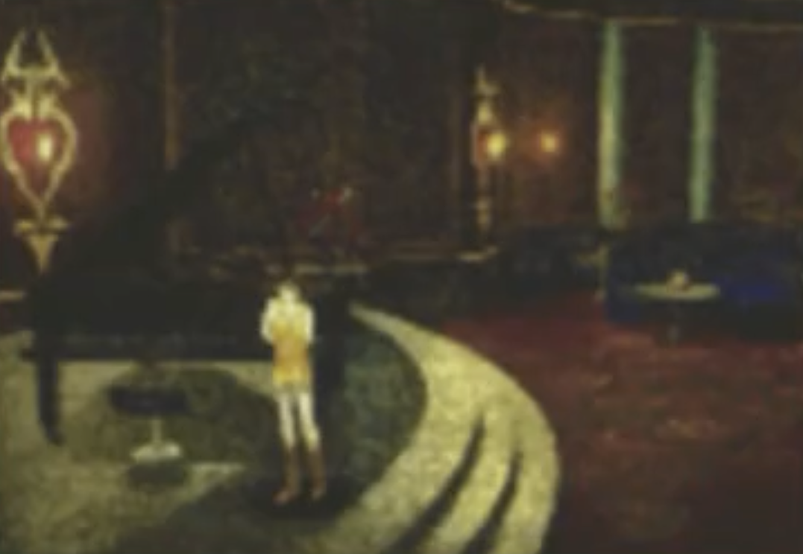

X
L
Sir Laguna's Page

Timber Maniacs 1
Timber Maniacs 2
Timber Maniacs 3
Timber Maniacs 4
Timber Maniacs 5
Timber Maniacs 6
(extra)
Timber Maniacs 7
Timber Maniacs 8
Timber Maniacs 9
Timber Maniacs 10
Timber Maniacs 11
Timber Maniacs 12